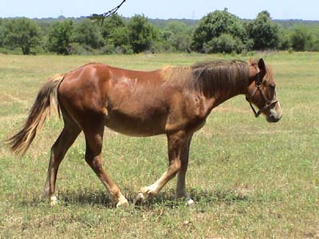

Thistle arriving
at the Parents' He and Skye seem to be very happy with
each other's company

Yearlings are always a bit awkward,
but there's a lot here that I like...
He's got some great legs. I like them
solid with big joints.
He seems small until someone gets
close to him. I'd guess he's around 14 hh now.
It took him a couple of days to get used
to the place. Now he comes walking over any time he sees someone.
He's just a little on the thin side,
but I think that's best at his age.
Yes, it is a theme that his head is
down eating grass...
He and Skye do some running and playing,
but he spends most of his time grazing.